Lo que se cambió a partir de la reunión del 20 de noviembre y de las pruebas previas: planta, etiquetas, materia prima, compras y planificación.
Materia prima → Llevar a pie de máquina
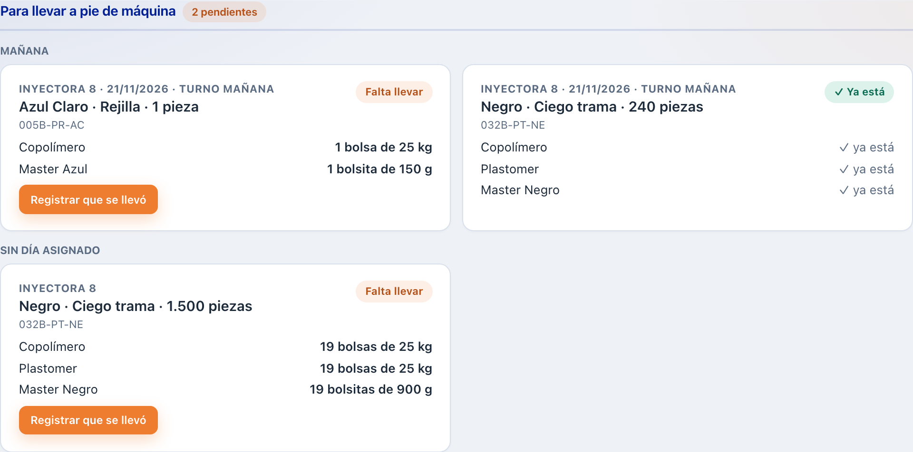
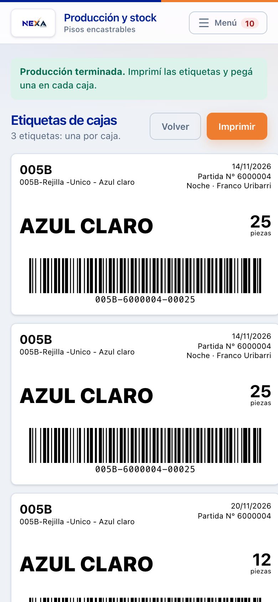
5áreas con cambios
21mejoras
10preguntas abiertas
NEXA Soluciones · Pisos encastrablesDocumento para revisión con la empresa
NEXA · Mejoras después de la demo
Resumen
Qué cambió y para quién
La idea de fondo es la que se habló en la reunión: que cada uno haga sólo lo suyo y que el Encargado no tenga que coordinar a mano lo que el sistema ya sabe.
Operario
«Terminar producción» primero; la carga de la tolva, abajo.
Puede cambiar lo que cargó en cada carga, hasta 4 bolsas.
Al terminar, las etiquetas salen solas.
Ya no queda trabado por material de la producción anterior.
Materia prima
Lista de lo que hay que llevar a cada máquina, en bolsas para toda la tanda.
El ingreso se registra contra su compra: proveedor y cantidad salen de ahí.
Pide a Compras en kilos o en gramos y recibe avisos de sus compras.
Compras
Se entera cuando Materia prima registra el ingreso: la compra se cierra sola.
El total se calcula mientras se escribe el precio.
Encargado
Ya no hace el retiro de material: lo ve Materia prima.
No puede planificar en un turno que ese día no se trabaja.
Ve cuántos turnos le falta revisar y cuánto duró cada pausa.
El recorrido de una tanda
Encargado
Planifica la tanda: máquina, día y turno.
→
Materia prima
La ve en «Para llevar». Dylan lleva el material y Daniela lo registra.
→
Operario
Arranca y carga la tolva desde su celular.
→
Fin
Termina la producción: las cajas entran a stock.
→
Etiquetas
Se imprimen en el momento, una por caja.
Todo lo que se describe ya está funcionando en el sistema. Las capturas son de una copia de prueba con datos de ejemplo.
2
NEXA · Mejoras después de la demo
01 · Pantalla del operario
01
Pantalla del operario
Después de cargar la tolva, la pantalla parecía pedir más material en vez de dejar terminar. Ahora lo principal está arriba.
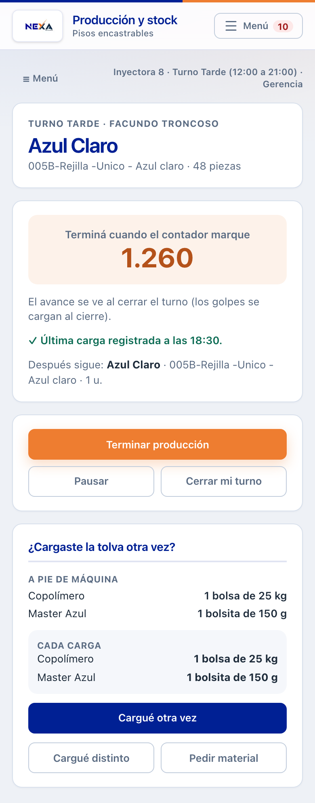
123
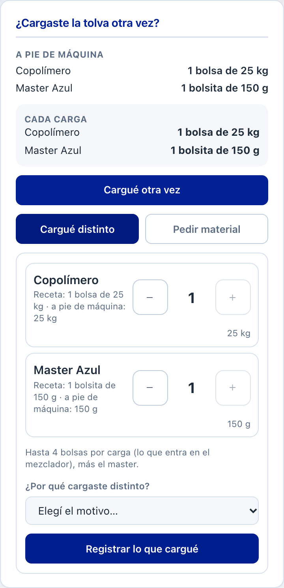
45
1
Cuándo terminarEl contador al que tiene que llegar.
2
Terminar producciónPrimero, junto con pausar y cerrar el turno.
3
¿Cargaste otra vez?La carga de la tolva quedó abajo. «Pedir material» ya no es el botón grande.
4
Cargué distintoEstá siempre: en cada carga se pueden cambiar las cantidades.
5
Hasta 4 bolsasLo que entra en el mezclador, sin contar el master.
Material que quedó de la producción anterior
Si es de la receta
Pasa solo a la producción nueva cuando el operario arranca. Ya no hay que conciliar nada.
Si no es de la receta
Por ejemplo, master de otro color. El operario ve qué material es y que lo retira Materia prima; no puede arrancar hasta que se devuelva.
3
NEXA · Mejoras después de la demo
02 · Etiquetas
02
Etiquetas al terminar la producción
Salen solas
Al tocar «Terminar producción», el operario pasa directo a imprimir las etiquetas de todas las cajas de esa producción.
Una por caja, con el código, el color en grande, la cantidad, la partida y el código de barras.
Ya no aparecen al cerrar cada turno: se imprimen todas juntas al final.
Si no se imprimieron en el momento, la pantalla del operario las ofrece hasta que arranque la tanda siguiente.
Imprimir no cambia el stock: las cajas ya entraron al cerrar el turno o la producción.
Menú «Etiquetas» nuevo
En Fábrica, para el Encargado, Supervisión y Gerencia. Se busca por fecha y por producto o color, y se imprimen las de toda una producción o algunas cajas; la reimpresión queda registrada con su motivo.
Fábrica → Etiquetas
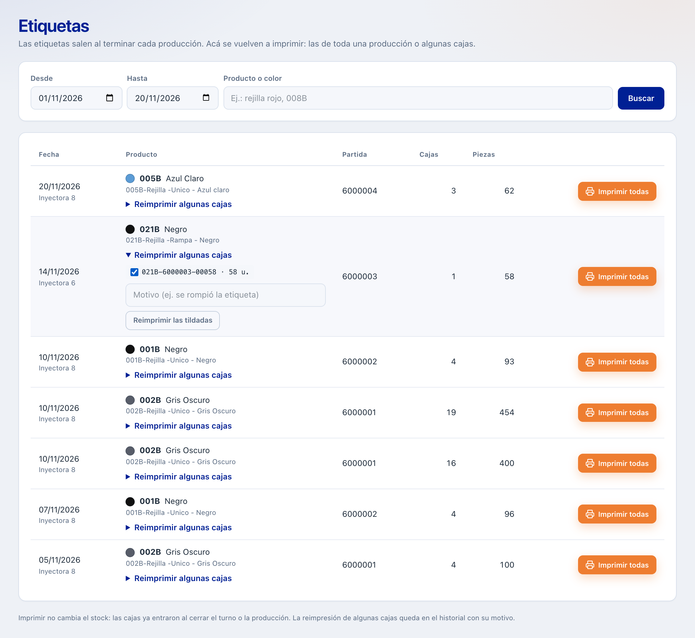
123
1
BuscarPor fechas y por producto o color.
2
Algunas cajasSe tildan y se reimprimen con el motivo.
3
Imprimir todasLas de toda la producción.
4
NEXA · Mejoras después de la demo
03 · Materia prima
03
Llevar material a pie de máquina
Lo que el Encargado planifica le aparece a Materia prima como una lista de lo que hay que llevar a cada máquina. Dylan baja el material y Daniela registra que se llevó; David ya no hace el retiro.
Materia prima → Llevar a pie de máquina
1234
1
Por díaAtrasadas, hoy, mañana y sin día asignado.
2
Para toda la tandaLas bolsas enteras que faltan, descontando lo que ya está junto a la máquina.
3
Ya estáCuando todo el material está a pie de máquina.
4
Registrar que se llevóAbre el registro ya completo.
Materia prima → Registrar lo que se llevó
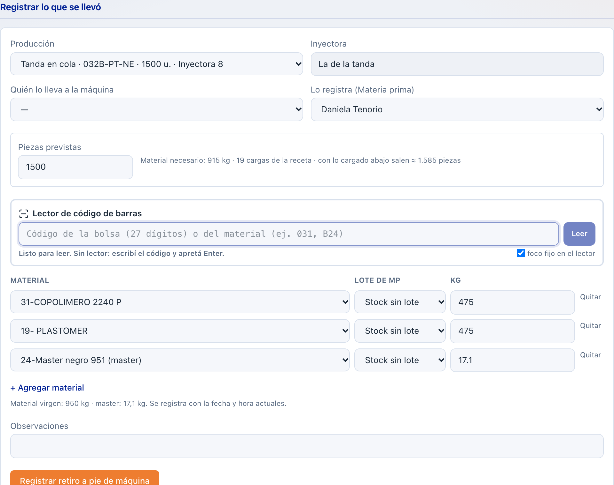
567
5
Quién lo llevaDylan, un operario o el Encargado.
6
Lo registraDaniela, ya elegida.
7
Piezas y materialPrecargados para toda la tanda, en kilos. Se puede leer el código de cada bolsa.
·
Al registrarVuelve a la lista: ya no pasa a la pantalla de conciliación.
5
NEXA · Mejoras después de la demo
03 · Materia prima
El ingreso se registra contra su compra
Antes se podía ingresar la mercadería sin decir de qué compra era: el stock subía pero la compra seguía figurando «llega el 25/11». Ahora se elige primero la compra y de ahí salen el material, el proveedor y la cantidad pendiente.
Materia prima → Ingreso de proveedor
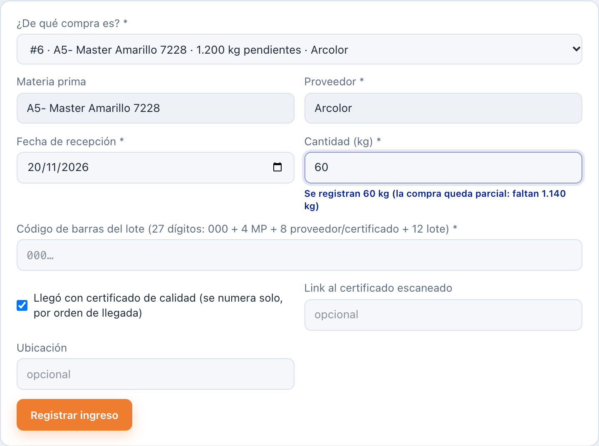
123
1
¿De qué compra es?Las compras abiertas, con lo pendiente y cuándo llega.
2
ProveedorSale de la compra.
3
CantidadPropone lo pendiente. Si llega menos, la compra queda parcial.
·
Sin compraPara stock inicial o una devolución. Si el material tiene una compra abierta, se pide el motivo.
Pedido a Compras en kilos o en gramos
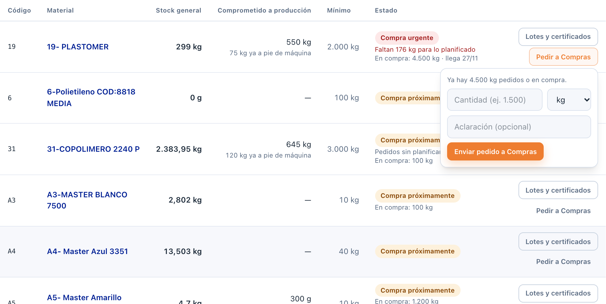
Al pedir a Compras se elige la unidad: kg o g. La compra se guarda en kilos.
Se corrigió la cantidad sugerida: un número como «1,195» se leía como mil ciento noventa y cinco.
Cuando hay material para llevar hoy, la pantalla de Materia prima lo avisa arriba.
6
NEXA · Mejoras después de la demo
04 · Compras
04
Compras y Materia prima, conectadas
Cada una se entera de lo que hace la otra, sin mails ni planillas.
Compras → Materia prima
Cuando Compras ejecuta el pedido (proveedor y fecha de llegada) y cuando cambia el estado o la fecha. Materia prima tiene ahora «Avisos» en su menú.
Materia prima → Compras
Cuando Materia prima registra el ingreso: la compra pasa sola a entregada o parcial, y Compras no tiene que marcarla a mano.
Avisos de Materia prima
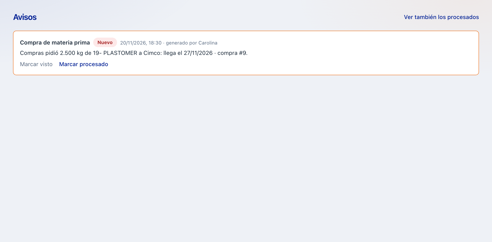
El aviso que recibe Daniela cuando Compras ejecuta su pedido.
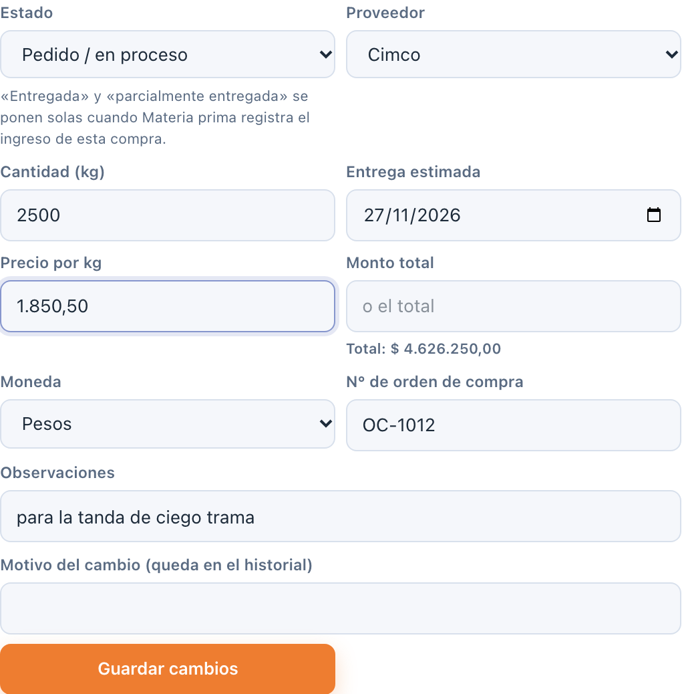
12
El total se calcula solo
1
Precio por kgSe escribe uno de los dos montos.
2
TotalAparece mientras se escribe, con la cantidad de la compra. Al revés también: con el total se calcula el precio por kg.
«Entregada» y «parcialmente entregada» ya no se ponen a mano: las pone el ingreso de Materia prima.
7
NEXA · Mejoras después de la demo
05 · Planificación y otras pantallas
05
Planificación y otras pantallas
El calendario respeta el esquema del día
Producción → Calendario por máquina y turno
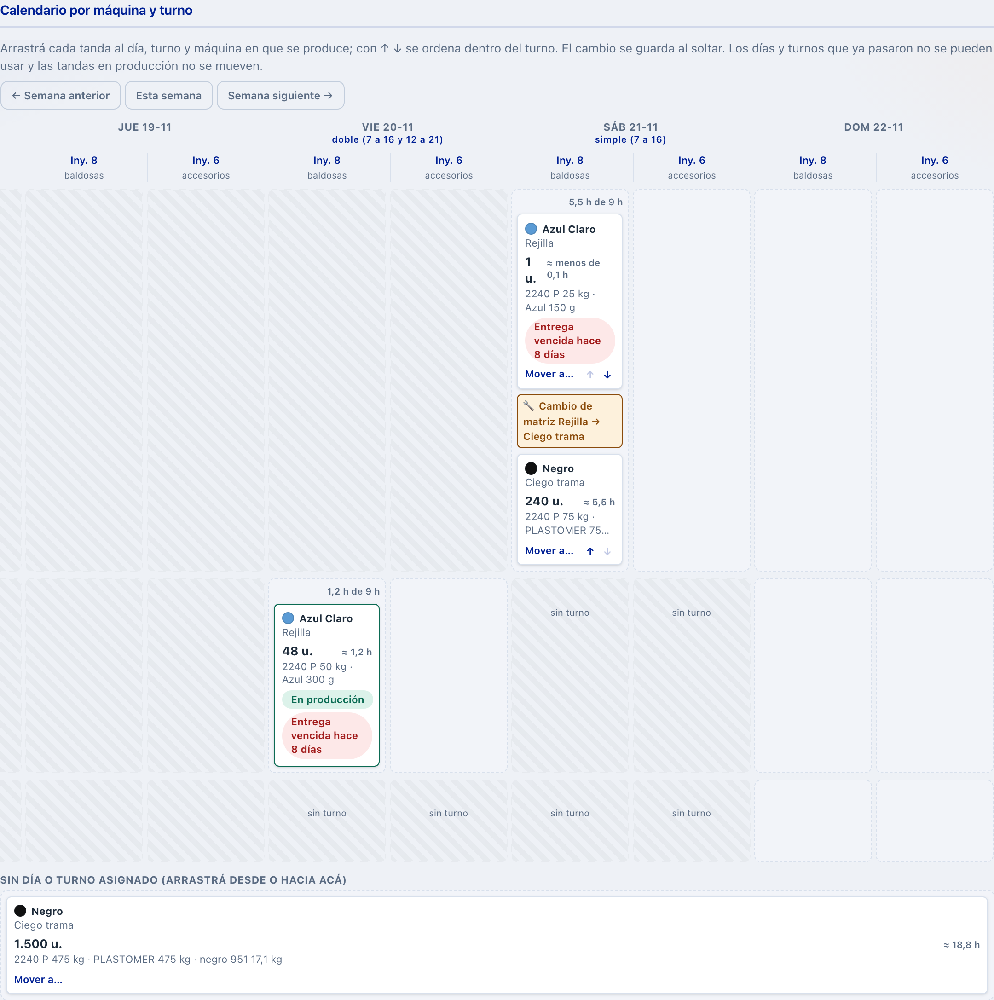
123
Filas: mañana, tarde y noche. Cada día tiene una columna por inyectora.
1
Esquema y horariosEl esquema de cada día, con sus horarios.
2
Sin turnoUn turno que ese día no se trabaja se ve tachado y no recibe tandas.
3
Cambio de matrizAparece entre las dos tandas, justo antes de la que lo necesita.
En la tanda, «Quitar los marcados» pasó a decir «Sacar de esta tanda los pedidos tildados»: los pedidos que se sacan vuelven a «Por planificar» para ponerlos en otra.
8
NEXA · Mejoras después de la demo
05 · Planificación y otras pantallas
Relevos y novedades
Producción → Relevos y novedades
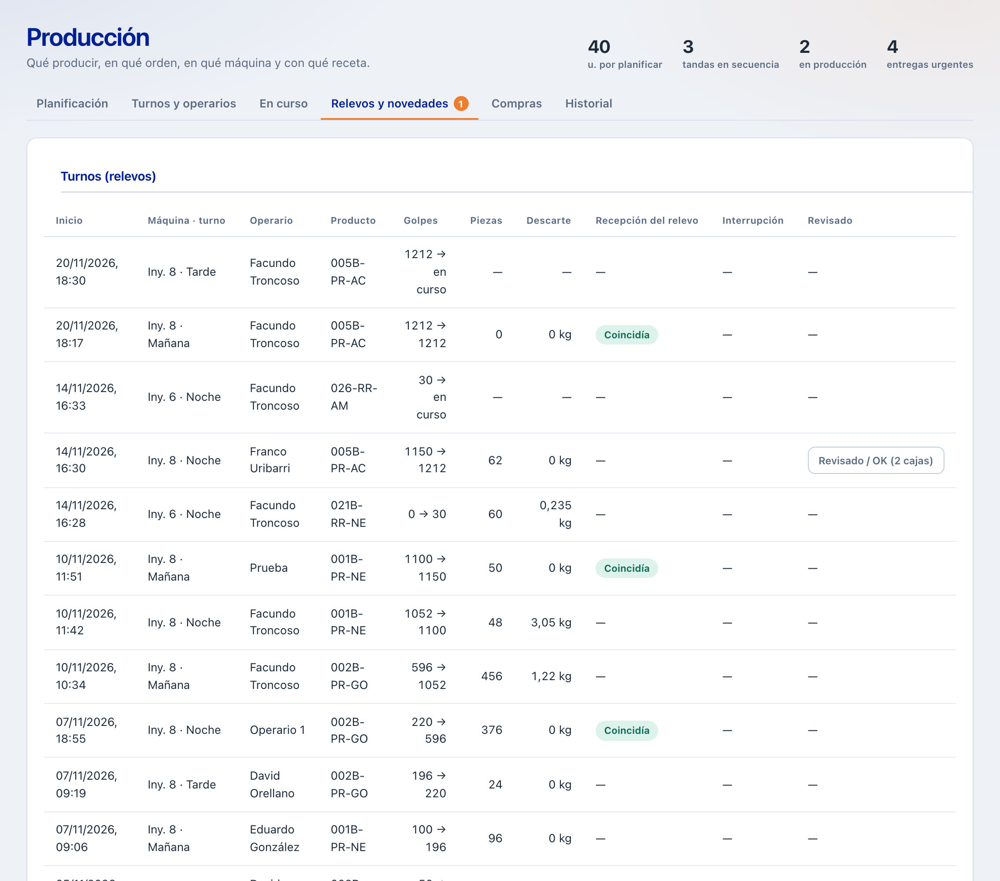
1
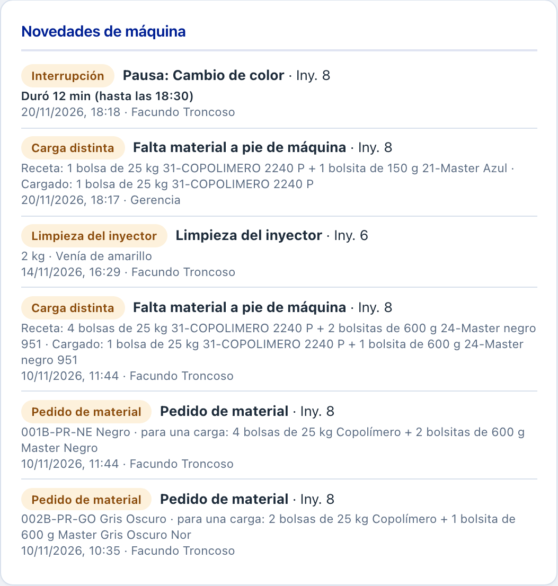
2
1
Turnos por revisarEl número cuenta los turnos que pasaron cajas a stock y todavía no tienen el «Revisado / OK». El botón sólo aparece en esos turnos.
2
Cuánto duró la pausaCon la hora en que se reanudó, o «Sigue en pausa».
Pedidos: de qué falta producir
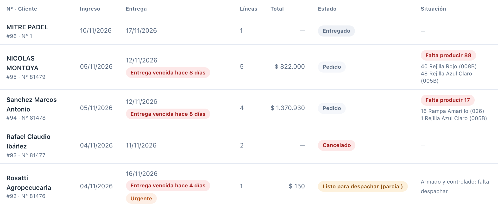
«Falta producir 88» ahora dice de qué: 40 Rejilla Rojo y 48 Rejilla Azul Claro.
Stock de productos
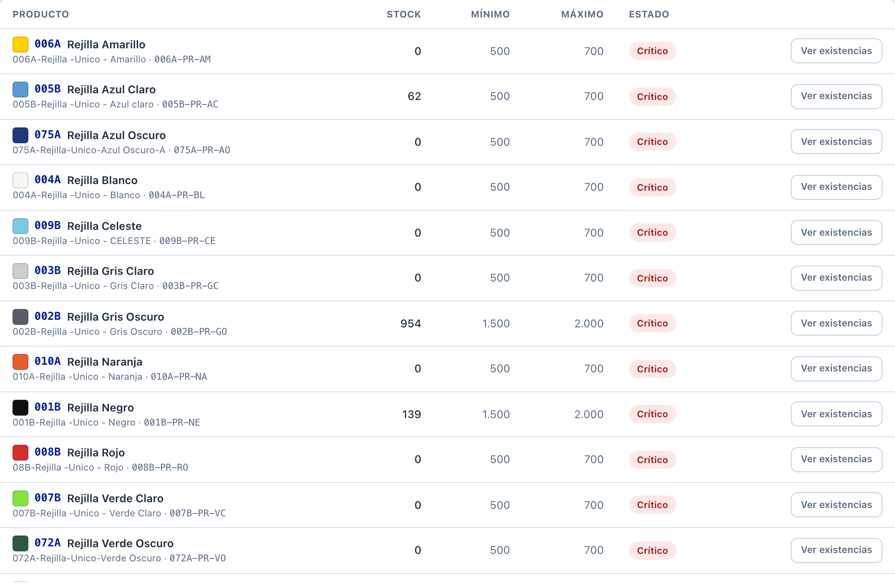
El código como va en la etiqueta (005B), el nombre y el color.
Pesos en kilos. Desde 1 kg el sistema muestra kilos: «1,875 kg» en lugar de «1.875 g», que se leía como uno coma ocho.
9
NEXA · Mejoras después de la demo
06 · Preguntas pendientes
06
Preguntas pendientes
Mientras no se respondan, el sistema funciona como dice «Hoy».
Planta y materia prima
1
Material que sobra entre producciones: ¿se usa en la tanda siguiente si es de su receta, o vuelve siempre al depósito?
HoySi es de la receta, pasa a la tanda siguiente; si no, lo devuelve Materia prima.
Así está bienSiempre al depósito
2
Lista «Para llevar a pie de máquina»: ¿les sirve con atrasadas, hoy, mañana y sin día, o sólo lo del día?
HoyAtrasadas, hoy, mañana y sin día asignado.
Así está bienSólo lo del día
3
Hasta 4 bolsas por carga: ¿el master cuenta aparte? ¿Alguna receta lleva más de 4 bolsas?
Hoy4 bolsas de material, más el master aparte.
Así está bienEl master también cuenta
4
Ingreso sin compra: si el material tiene una compra abierta, se pide el motivo. ¿Hay casos en que esto moleste?
HoyCon compra abierta, el ingreso sin compra pide el motivo.
Así está bienHay casos (detallar)
Producción y catálogo
5
Entre las 13 y las 16 se superponen mañana y tarde en el esquema doble. ¿Los turnos se llaman distinto, o alcanza con ver los horarios?
HoyMañana, tarde y noche, con los horarios del esquema a la vista.
Alcanza con los horariosCambiar los nombres
6
«Que le pongamos borde»: ¿qué producto hay que renombrar de esquinero a borde?
HoyBordes y esquineros figuran como están en el catálogo.
10
NEXA · Mejoras después de la demo
06 · Preguntas pendientes
Producción y catálogo
7
Stock de productos: además del color, ¿quieren una foto de cada modelo? En ese caso, ¿pueden pasarlas?
HoyCódigo, nombre y un cuadrado con el color.
Alcanza con el colorAgregar fotos
8
Lote: ¿por lote de materia prima o por inyección? Queda para definir con la certificación ISO.
HoyLa partida se abre por producción.
Por producciónPor lote de MP
Puesta en marcha
9
Lector de código de barras con visor para el armado lejos de la computadora: ¿lo prueban en la próxima visita?
HoyEl lector va conectado a la computadora del armado.
ProbarloNo hace falta
10
Pedidos de prueba viejos (con la entrega vencida hace días): ¿se pueden borrar para empezar a usarlo con pedidos reales?
HoySiguen en la lista de pedidos y en «Por planificar».
BorrarlosDejarlos
Próximo paso
Reunión con Daniela
Recorrer Materia prima como se hizo con David: la lista para llevar, el ingreso contra la compra y el conteo físico.
Prueba con un operario
Una producción real de punta a punta, desde el celular, para ver qué le resulta difícil.
Ya está en el sistema.
Con estas respuestas se ajustan los últimos detalles antes de usarlo con producción real.